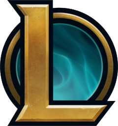

About us
JAYOB e-Sports it's a league of legends team that was formed by Team AWP when JAYOB became their sponsor. yeTz was the original member of the team, coming from AWP. On October 3, the full lineup was announced, including yeTz (jungle), TheFoxz (mid), Eryon (support), esA (AD carry), and element (top).
On October 15, Kyoby joined the lineup, and TheFoxz moved from midlane to AD carry. However, on the 26th, Kyoby left the team and Rafes joined as the new starting jungler; yeTz moved to the midlane to replace, Oxydrean joins as jungler and Rafes left the team.
When IEM San Jose was announced, esA had to step down from the starting lineup because he had been banned from Riot-sponsored competition due to Elo-boosting. He moved from AD carry to become a coach for the team.
JAYOB qualified for the IEM San Jose Qualifiers. They were eliminated in the quarterfinals by CNB, but this qualification also qualified them for CBLOL 2015.